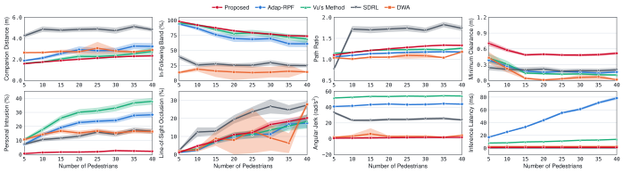

Proposed
95.1%
Success Rate
1,826 / 1,920 episodes
Anonymous Institution
Submitted to ICRA 2027
Trained in Isaac Sim with 4096 parallel environments.
Human-following and accompanying capabilities show significant potential for everyday applications. Although human-following has been extensively investigated, existing methods primarily focus on accompanying humans in relatively static environments and remain limited in dense, dynamic crowds involving complex multi-pedestrian interactions.
To address these challenges, we propose an end-to-end Deep Reinforcement Learning (DRL) framework based on a Spatio-Temporal Graph Gated Recurrent Unit (ST-Graph-GRU) architecture for human-following robots in crowded environments. The graph module represents spatial interactions among the robot, the target person, and surrounding pedestrians, while the recurrent module captures temporal motion patterns and evolving behavioral dynamics to learn appropriate actions and optimize the policy for effective and safe human-following behavior.
The proposed method is compared with state-of-the-art (SOTA) human-following approaches across diverse scenarios with up to 40 pedestrians, demonstrating superior following performance, safety, and robustness. Moreover, real-world experiments further validate the effectiveness and practical applicability of the proposed approach.
Evaluated across 12 crowd-movement scenarios, each with crowd densities ranging from 5 to 40 pedestrians. The proposed policy is further validated across multiple simulators, including Isaac Sim, MuJoCo, and IR-SIM.
Benchmark evaluated across 1,920 paired episodes per method: 12 crowd formations × 8 pedestrian densities (5–40 pedestrians) × 20 trials per configuration.
95.1%
Success Rate
1,826 / 1,920 episodes
46.6%
Success Rate
894 / 1,920 episodes
41.1%
Success Rate
790 / 1,920 episodes
20.6%
Success Rate
396 / 1,920 episodes
9.4%
Success Rate
181 / 1,920 episodes
Success rate and breakdown of failure modes (pedestrian collisions, companion collisions, and target loss) for all evaluated methods.
Success rates of all benchmark methods across different crowd configurations and pedestrian densities.
Performance metrics across increasing crowd densities shown as mean values with 95% confidence intervals.
